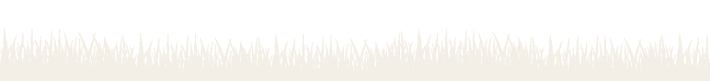

Join a workshop
Explore creative activities and meet local neighbours. Email us for upcoming workshop details.
Ask about upcoming workshops
Elephant & Castle
Community Arts is a small, independent arts initiative based in Elephant & Castle, Southwark.
We organise free, hands-on art workshops that bring local residents and young artists together. Our aim is simple: to give people of different ages and backgrounds a place to meet, make things and learn from one another.
Our workshops began at Draper Hall, where we've been experimenting with botanical printing, natural dyes and collage. We're also looking to introduce activities such as calligraphy, knitting and textiles, with workshops shaped by the interests and skills of the people taking part.
Alongside this, we want to give students and emerging artists opportunities to lead workshops, gain practical teaching experience and, as funding allows, be paid for their work.
We're starting locally, with the hope of gradually bringing these activities to more community spaces across Southwark.
Explore creative activities and meet local neighbours. Email us for upcoming workshop details.
Ask about upcoming workshopsBring botanical printing or collage to your community space. Contact us to discuss your group, venue and budget.
Discuss hosting a workshopBringing us together

Project Lead & Workshop Facilitator
Anis is an artist and animator with a background in experimental 3D animation, higher education and creative project coordination. Born and raised in Elephant & Castle, he founded Community Arts out of a desire to bring something back to the neighbourhood he grew up in. Drawing on his experience working with students and supporting creative projects, he brings together local artists, residents and community spaces to make art more accessible while creating opportunities for the next generation of creatives.

Specialist Workshop Facilitator — Botanical Print & Illustration
Miki is a creative practitioner with a particular interest in botanical printing and illustration. Inspired by the natural world, she uses an experimental approach to explore the unexpected colours, patterns and textures of everyday organic materials. Funded by UAL's Community Exchanges programme, she has run workshops across Southwark, including at Walworth Living Room and Trinity Centre, as well as public workshops at Two Temple Place, Hypha Studios and Camberwell College of Arts. Her workshops invite participants to slow down, engage their senses through touch, scent and close observation, sparking creativity through playful experimentation with natural materials.

Specialist Workshop Facilitator — Collage & Calligraphy
Anna is a hands-on creative with a love for craft, fashion and the art of making things by hand. An enthusiastic sewer with a particular interest in clothing repair and creative reuse, she enjoys finding new possibilities in familiar materials. Alongside her artistic interests, her qualifications in early-years care give her a strong foundation in supporting creative exploration and engaging with different learning styles. Her approach to collage and calligraphy combines practical craftsmanship, playfulness and an appreciation for the little details that make handmade work unique.
With gratitude
From the studio
A growing record of the things we make, the people we meet and the ideas we explore. Follow our workshops, creative experiments and collaborations as Community Arts develops across Southwark.
This week at Draper Hall, we continued exploring collage, building on the work started during our previous workshop. Rather than introducing an entirely new activity, we wanted to
Read the full entryThis week, we brought in a selection of seeds, including chilli and coriander, which prompted a discussion about growing conditions, germination and the best times of year to begin
Read the full entryThis Wednesday was a quieter, more conversational session, reminding us that creativity doesn't always have to result in a finished piece of artwork. We continued exploring ways to
Read the full entryWritten by Anna Verdes During one of our Community Arts workshops, Alma, a regular participant, introduced an interesting question about how we might repurpose discarded egg carton
Read the full entryThis week, we experimented with crushed blueberries. They produced scratchy, splotchy marks on the paper, and we kept the activity abstract, playing with the material rather than t
Read the full entryBlack walnut hull gave us a rich brown unlike anything we’d produced so far. I’d tried tea previously, but this had a depth closer to coffee or dark oak. The dried hull was crumbly
Read the full entryWe visited the Horniman Dye Garden to learn more about plant-based dyes and consider how we could develop their use in our workshops. I have a growing interest in history, and maki
Read the full entryFollowing our experiments with onion skins and turmeric, I brought red cabbage into the next session. Grating it into a cup and leaving it with a little water produced a deep purpl
Read the full entryI’d been thinking about natural dyes for several sessions, so this week we began experimenting with onion skins and turmeric. We prepared the colours at the community centre, using
Read the full entryThis session gave us more room to experiment with collage. We cut images and lettering from a Tesco magazine, combining photographs of food and bold typography with plant material.
Read the full entryFor this session, we brought in a Guzmania ‘Hope’. Its vivid red centre, with shades of pink and white towards the top, made it an interesting subject for drawing. What appears to
Read the full entryFor this session, we worked with Boston fern ( Nephrolepis exaltata ), making simple monoprints with one ink colour per print. Its arching fronds are divided into small leaflets al
Read the full entryOur visits to Societree, the local plant shop, have become a useful part of preparing for the workshops. Whenever I go in, we have a quick conversation about different plants, what
Read the full entryMiki and I spent a few hours volunteering at R-Urban in Poplar. She had been before, but this was my first visit. We watered plants, did some trimming and helped with the general u
Read the full entryFor our first session, we kept things small and focused on botanical printing. We rolled paint onto leaves, placed paper over them and used a clean roller on the back to apply pres
Read the full entryI designed the posters and printed them at the local library, which turned out to be quite expensive. Liza kindly offered to help with printing the occasional poster at the communi
Read the full entryI went to Draper Hall when I was very young, before the age of ten, for activities and arts workshops. I remember being surprised that my building was included in the community the
Read the full entryAround the time I began developing Community Arts, I noticed a poster for children’s creative play sessions in my local Sainsbury’s. I photographed it. Once I’d started planning wo
Read the full entryWhile researching workshops, I came across photographs from a collaboration between the Singapore Red Cross and Schneider Electric. One in particular stayed with me: two participan
Read the full entry